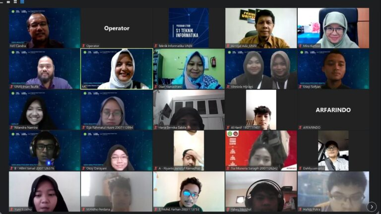

Jurusan Teknik Elektro Program Studi Teknik Informatika yang bekerjasama dengan GDSC-UR (Google Developer Student Clubs Universitas Riau) mengadakan webinar (kuliah umum) yang merupakan agenda tahunan program studi teknik informatika. Topik kuliah umum ini adalah data analytics yang berkaitan dengan sektor kesehatan, berdasarkan fenomena pandemi covid-19. Kegiatan ini di mulai dengan kata sambutan oleh Kaprodi Teknik Informatika Universitas Riau oleh Dr. Feri Candra, S.T.,M.T, kata sambutan oleh kepala jurusan Teknik Elektro oleh Anhar, S.T.,M.T.,Ph.D dan dilanjutkan dengan kata sambutan sekaligus pembukaan kegiatan kuliah umum oleh dekan teknik Universitas Riau Prof.Dr. Eng. Azridjal Aziz, , S.T., M.T.
Kuliah umum diadakan secara virtual menggunakan Zoom Meeting pada tanggal 17 Juni 2022 di pandu oleh MC Yulmaisi Dwi Asmarita dan moderator oleh Dr. Irsan Taufik Ali, S.T., M.T dengan pemaparan materi kuliah umum yang di sampaikan oleh Prof. Ts. Dr. Mira Kartiwi yang merupakan Director, Center of Professional Development IIUM Malaysia yang mendapat sambutan yang cukup antusias dari Mahasiswa khususnya yang mengikuti kuliah umum.
Materi yang disampaikan narasumber menjelaskan betapa pentingnya Data Analytics pada era ini. Semakin banyak data, semakin banyak informasi namun masih sedikit yang mengerti nilai pentingnya sebuah data. Data analytics dapat membantu bisnis menganalisis data dalam volume besar dan memperlihatkan insight ke seluruh tim sehingga memiliki pandangan menyeluruh terkait pekerjaan apa yang perlu dilakukan dan diproritaskan untuk meningkatkan efisiensi. Covid-19 menjadi alarm yang luar biasa impactnya untuk kita di berbagai sektor termasuk ekonomi dan kesehatan.
Menurut narasumber, Indonesia merupakan salah satu negara yang memiliki open data terbesar sehingga banyak proses digitalisasi di Indonesia yang dapat diteliti. Banyak talent yang mampu secara teknik (menguasai software) namun masih minim pengetahuan mengenai data dan critical thinking. Tidak semua data yang dimiliki dapat dimanfaatkan, berkaitan dengan nilainya. Semakin banyak belajar, kita akan mendapatkan ilmu-ilmu baru. Oleh karena itu, narasumber mengajak peserta agar jangan berhenti untuk belajar. Hal terpenting dalam mempelajari data adalah bagaimana merubah paradigma datanya.
Kegiatan kuliah umum ini di tutup dengan pertanyaan-pertanyaan dan langsung di jawab oleh Prof. Ts. Dr. Mira Kartiwi. Kegiatan ini berjalan dengan sangat lancar dan khidmat.